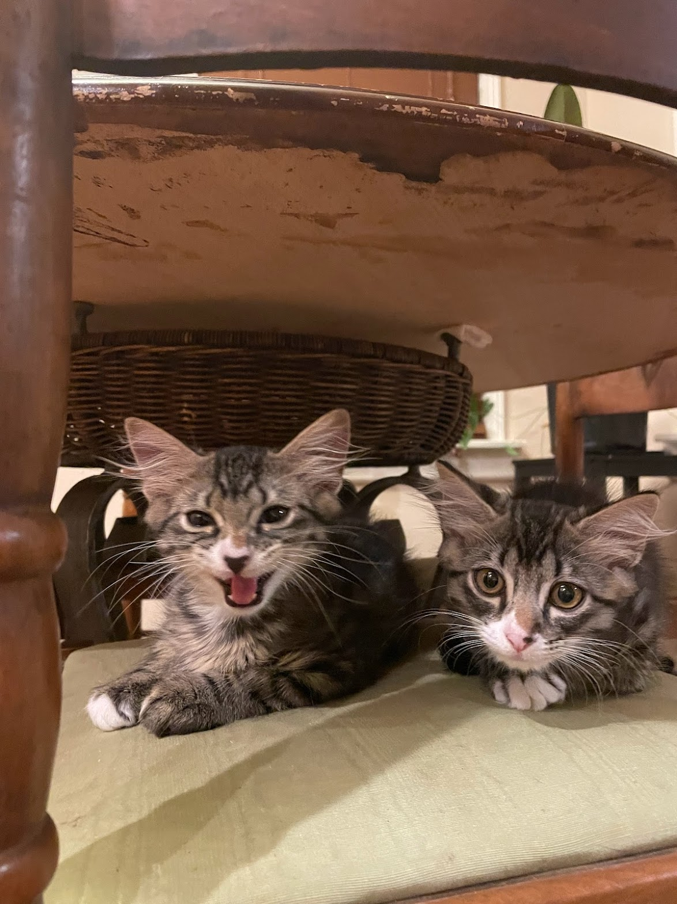
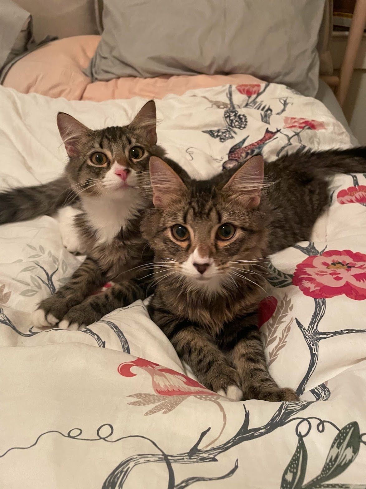
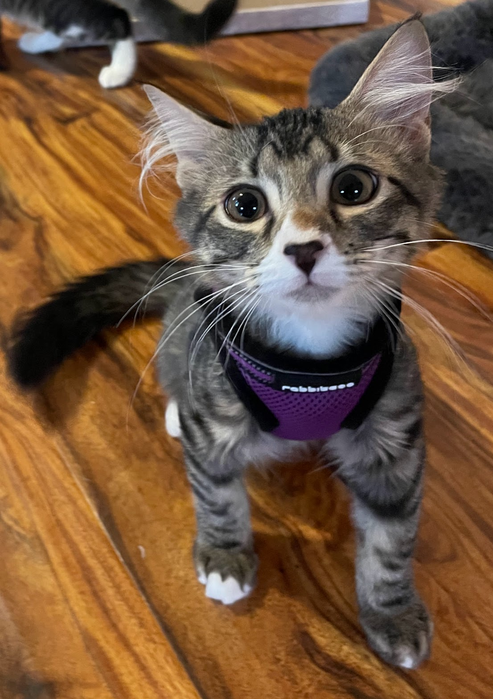

cats
 Peanut (left) and Butter (right) are two rescue cats I adopted from a local shelter called SNIPSA in July 2023. They are some sort of medium longhair mix and are brothers from the same litter. I found the easiest way to tell them apart is their noses: Peanut has a black nose, and Butter has a pink nose.
I've had cats all throughout my life, but never raised them on my own. Note I did not bottle feed them during their vulnerable era, these two entered my own in their most manic and hyper state. Coming home at three months, they were a handful.
Peanut was the rowdier one of the two, and he was the one who came home first. They did not come from a cage in a shelter, they came from seperate volunteer fosters that help SNIPSA with their animals while they are waiting to be adopted. Peanut's foster happened to be available first, so home he came. At first I named him Louis, thinking I would name his brother Vuitton, but after careful consideration I decided not to name them something so tacky.